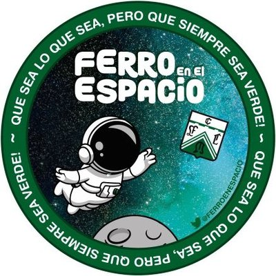

Fútbol Femenino
Fútbol Masculino
Entrevistas
Columnas
Próximos encuentros
Fútbol Masculino
Próxima Fecha
(Primera Nacional 2023, Zona "B", 18va. Fecha)
Partido
: Ferro Carril Oeste - Gimnasia y Esgrima (Jujuy)
Día y Hora
: Domingo 18/6, 17.10 hs.
Cancha
: Ferro Carril Oeste (Arq. Ricardo Etcheverri)
Árbitro
: A confirmar
Observaciones
: Con publico local / Televisado
Televisión
TyC Sports
Fútbol Femenino
Próxima Fecha
(Primera División Femenina, 17ma. Fecha)
Partido
: Ferro Carril Oeste - Defensores de Belgrano (CABA)
Día y Hora
: Martes 13/6, 11hs.
Cancha
: Predio Pontevedra "Dr. Santiago Leyden"
Árbitro
: A confirmar
Foro
¿Quién fue figura de la fecha 17°?
Mostrar datos